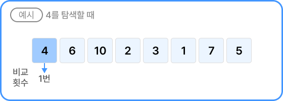
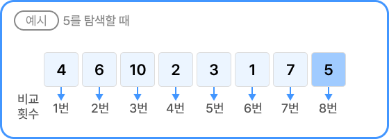

순차 탐색은 리스트의 첫 번째 요소부터 순차적으로 원하는 요소를 찾는 간단한 탐색 알고리즘이다.
순차 탐색의 수행 시간
n개의 데이터에서 특정 요소를 순차 탐색하는 경우의 수행 시간은 O(n)으로 데이터가 많아질수록 원하는 요소를 찾는 데 걸리는
시간이 선형적으로 증가하는 단점이 있다. 이때, 리스트는 정렬되어 있지 않아도 상관없다.
최선의 경우

첫 번째 값을 찾는 경우에는 1번 비교하면 탐색이 종료된다.
최악의 경우

마지막 요소 또는 존재하지 않는 데이터를 찾는 경우에는
n번의 비교가 이루어지고 탐색이 종료된다.